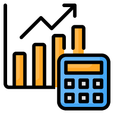

Sobre mi
Sóc informàtic orientat a la programació multiplataforma. Aquest 2026 he acabat el CFGS en Desenvolupament d'Aplicacions Multiplataforma a la Salle Gràcia. M'estic especialitzant en IA i Big Data, a Jesuïtes Clot. Els meus punts forts són la resolució de problemes i el treball en equip. Els llenguatges que més domino són PHP (Laravel), SQL, Kotlin i Java. He experimentat amb Python, Flutter, Swift i JavaScript.
Visita el meu LinkedIn! LinkedIn
Els meus Projectes
Front-end
Back-end
Aplicació web per a la visualització de dades segons els paràmetres establerts i visualització de prediccions. Aplicació en desenvolupament.
Aplicació mòbil responsive amb disseny adaptatiu per a diferents mides de pantalla. Mostra com passar de pantalla i com fer un login. És un template de login per a aplicacions mòbils.
Aplicació web i API per a la gestió de dades d'un joc de rol. Mostra com gestionar els personatges, els ítems, tant en API com en vista. També inclou funcionalitats d'autenticació i gestió d'usuaris, soft delete i pujar imatges.

Mitjana Estudiants Projecte lliure — 2026Aplicació mòbil per analitzar les notes dels estudiants i les enquestes de satisfacció per demostrar una correlació entre tots dos.
Per veure més projectes, entra al meu GitHub: GitHub
Experiència
Becari en Màrqueting | Acció Preventiva (02/2026 - 05/2026)
Gestió de dades per a l'optimització del treball en equip.
Formació
Títol CFGS en Desenvolupament d'Aplicacions Multiplataforma | La Salle Gràcia (2023 - 2026)
Curs de Frontend per a principiants: maquetació i creació de pàgines web amb HTML, CSS i Bootstrap | Barcelona Activa (07/2024)
Introducció pràctica al disseny web responsive i maquetació estàtica utilitzant les eines estructurals d'HTML5, estils avançats amb CSS3 i el framework Bootstrap per agilitzar el desenvolupament d'interfícies adaptables.
Curs de Flutter per a persones programadores: creació d'aplicacions mòbils amb Dart | Barcelona Activa (07/2024)
Enfocament en el desenvolupament multiplataforma natiu per a iOS i Android mitjançant un únic codi base, aprofundint en la gestió d'estats, disseny de widgets personalitzats i integració de components del sistema.
Curs de Construcció d'APIs en PHP i MySQL per a persones programadores | Barcelona Activa (07/2024)
Disseny i implementació de serveis web estructurats sota arquitectura REST, cobrint el maneig de peticions HTTP, operacions CRUD segures, modelatge de bases de dades relacionals i autenticació.
Curs de TypeScript - tipus de dades, promeses i programació orientada a objectes | Barcelona Activa (07/2024)
Especialització en el superset de JavaScript per afegir tipatge estàtic robust al codi, asincronia avançada mitjançant promeses/async-await i patrons de disseny estructurats sota el paradigma de POO.
Curs de Kotlin per a persones programadores: creació d'apps d'Android | Barcelona Activa (07/2024)
Desenvolupament natiu modern en Android utilitzant les característiques clau de Kotlin, incloent la sintaxi concisa, la seguretat davant de nuls (null-safety) i la integració de vistes dinàmiques.
Curs d'Unity i C# per al desenvolupament de videojocs | Barcelona Activa (07/2024)
Fonaments pràctics de la lògica de videojocs en el motor Unity 2D/3D, controlant físiques, esdeveniments de col·lisió, scripts estructurats en C# i gestió del cicle de vida de les escenes.